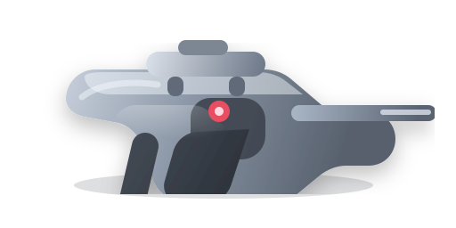
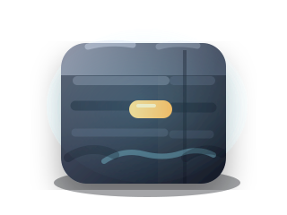

目标一
入口成型
主菜单把 PVE、PVP、武器库、商店与金币入口集中组织，武器卡图直接进入菜单运营位。
把原有资产总览推进到真实界面接入语境：主菜单负责入口组织，PVE 战斗负责 HUD 与反馈层，结算与关卡负责关卡拼装、成长奖励和教程讲解，让策划、程序与美术能直接对齐素材落位。
统一入口语义、战斗层级和结算说明，不再把素材孤立陈列，而是让每张卡图、每个 HUD 件、每个特效都进入真实 UI 流程。
目标一
主菜单把 PVE、PVP、武器库、商店与金币入口集中组织，武器卡图直接进入菜单运营位。
目标二
瞄准镜、锁定框、血量条、时间条、能力图标与命中反馈进入同一战斗 HUD 关系图。
目标三
环境障碍、反馈特效、结算奖励与教程提示共用一张板，方便程序定义同一套状态枚举。
主菜单不再只是展示主视觉，而是承接模式入口、武器库导流、货币信息和运营位。武器卡图与金币图标在此进入真实入口层级。

移动端入口
核心入口
赛季资金
12,480
背景主视觉负责建立都市夜战氛围，入口按钮贴近下沿，右侧补充武器卡位和商店导流，让大厅、武器库与运营位保持同一视觉重心。
武器库主卡

基础狙
默认推荐枪械，适合新手入口展示与开局装备预设。
精确狙

等离狙
以瞄准镜主视觉作为战斗基底，把 HUD 组件和反馈素材直接叠到战斗画面中，明确背景层、镜框层、能力层和结果层的程序挂载顺序。


角色血量 / 护盾
波次计时 / 关卡倒计时
战斗反馈屏
命中确认、误伤预警和目标识别结果在这里切换。
把环境资产、命中反馈、成长奖励与教程语言合到同一块作战板，方便定义哪些素材用于关卡拼装，哪些进入战斗结果，哪些进入结算与新手说明。
环境件不单独陈列，而是按掩体路线、街景识别和穿透反馈一起进入地图预览板。

街角墙体用于主路径遮挡，配合掩体撞击和慢镜判断。

街灯、广告牌帮助玩家完成地标记忆，便于教程说明目标刷新点。

停泊货车作为大型掩体，适合演示穿透判定与视线阻挡。
广告牌负责关卡导视、任务指向和高位敌人藏身提示。
命中特效 → 结果提示
成功命中时进入反馈层，也可在教程中标记“正确击杀”。

误伤警告 → 教程警示
作为教程中的错误反馈卡，提醒平民诱饵不可攻击。

慢镜特效 → 高光回放
用于关键击杀、高分结算和教程示范，形成高光瞬间。
教程流程
结算卡面
任务评级
S 级清场
武器卡图 → 解锁奖励
高阶枪械在结算页作为解锁或升级目标展示，衔接武器库成长。
道具图标 → 能力结算
冻结弹、定位器、延时器在结算页回顾本局使用与补充数量。
识别卡图 → 教程复盘
平民诱饵与外星目标卡图可进入复盘卡片，解释判定差异和误伤来源。
这一行把“素材 → 界面层”的核心关系压缩成程序可读的总览，方便继续拆成 Prefab、节点挂载与状态枚举。
基础狙 → 新手武器库
主菜单、结算奖励和教程示例都可复用同一张卡图。
等离狙 → 高阶解锁
适合商店主推卡或高分结算的解锁预告。
扫描图标 → HUD 能力槽
常驻在底部能力槽，与定位、冻结、延时构成技能序列。
锁定框 → 世界目标叠层
跟随敌人位置而变化，属于世界空间 HUD 容器。
环境物件 → 关卡预览
进入关卡拼装板和加载页预览，帮助玩家提前识别路线。
反馈特效 → 战斗结果提示
进入反馈屏、结算回放与教程复盘，不再孤立存在。